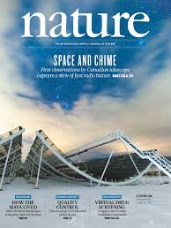

About Me
I studied physics and computer science at Harvard, where I graduated summa cum laude with highest honors, and I was a Technology and Innovation Fellow at the Business School. I will soon begin an MPhil in Economics at Oxford as a Rhodes Scholar. I have recently worked in investing, from early stage VC to public global macro, but my academic background spans machine learning, autonomous tech, theoretical physics, and fair AI. Some of my recent research projects include biologically-inspired techniques for adversarial ML robustness, unsupervised ML methods for understanding topological phase transitions, and deep convolutional neural nets on dark matter simulations.
After traveling to the Arctic in 2013, I pursued climate advocacy and produced an open-source documentary about climate change featuring author Margaret Atwood and astronaut Chris Hadfield. The documentary, 400PPM, was awarded the international Gloria Barron Prize.
Work Experience
D. E. Shaw
Investment Analyst
Summer 2021, Feb-Aug 2022
DESRI has raised over $15 billion of debt and equity capital for over 4500MWac of renewable assets
Georgian
Applied Research Scientist Intern
Jan-May 2021Georgian is a $2B+ tech-focused growth equity firm and fintech company in Toronto
Bridgewater
Investment Associate Intern
Summer 2020
Bridgewater is one of the world's largest and most successful macro hedge funds
Contrary
Venture Partner
2018-2021
Contrary is an early-stage VC fund backed by cofounders of Twitter, AirBnB, Facebook, and Reddit
Selected Distinctions
Academic Honors
Phi Beta Kappa, Senior 48 2020
Inducted by Harvard into national academic honor society article
Harvard Business School Technology and Innovation Fellow 2020/21
One of 13 students selected for the program article
John Harvard Scholarship 2018/2020
Awarded annually to top 5% of the class in an academic year
Detur Book Prize 2016-17
Awarded to freshmen achieving a 4.0 GPA for the academic year
Research Fellowships and Awards 2017-20
PRISE Fellow (2019), Herchel Smith Fellow (2019), Harvard College Research Program Fellow (2018/2019/2020)
Adventus Robotics
MIT-Lemelson Prize Winner ($10k) 2021
National MIT prize for for Collegiate Inventorsarticle
i3 Innovation Challenge Gold Prize Winner ($10k) 2020
Harvard Center for Technology & Entreprenuership article
Harvard LPCE Launch Fund Winner ($10k) 2020
Lemann Program on Creativity & Entrepreneurship article
Harvard iLab President's Innovation Challenge 2020
One of 5 finalists selected from 500+ companies article
The Allston Venture Fund Grant Recepient 2020/21
Awarded $75k from Bain Capital, General Catalyst, and others article
Other Awards
Queen Elizabeth II Diamond Jubilee Medal 2012
Presented on behalf of the Governer General of Canada article
Canada's Top 20 Under 20 2013
Presented annually to the top 20 youth in the nation article
Corporate Knight's Top 30 Under 30 2018
Awarded to 20 Canadians for sustainability efforts article
Emerging Canadian Female Leader of the Year 2016
Awarded by Brescia University and presented by Geena Davis article
International Barron's Prize for Young Heroes 2016
Gloria Barron prize for public service and community impact article
Ontario’s Junior Citizen of the Year 2011
Presented by the Lieutenant Governor of Ontario article
Science fair research awards 2013/2014/2015
Two-time Canada Wide Science Fair Grand Platinum award (2012/14), Team Canada ISEF (2013), Google International Science Fair Semi-Finalist (2013)article
University Scholarships
University of Toronto National Scholarship, National Schulich Leaders Scholarship (declined) 2016
Awarded full ($70k) scholarships to study at the University of Toronto and University of Waterloo
TD National Scholarship (declined) 2016
Awarded a $70k scholarship to study at any university in Canada
Publications
2021
M. Burhanpurkar, Z. Deng, C. Dwork, L. Zhang. 4/9/2021. “Scaffolding Sets.” arXiv preprint.
2019
The CHIME/FRB Collaboration. 1/9/2019. “Observations of fast radio bursts at frequencies down to 400 megahertz.” Nature, 566, 7743, Pp. 230-234.
The CHIME/FRB Collaboration. 1/9/2019. “A second source of repeating fast radio bursts.” Nature, 566, 7743, Pp. 235-238.
2018
The CHIME/FRB Collaboration. 8/9/2018. “The CHIME Fast Radio Burst Project: System Overview.” The Astrophyiscal Journal, 863, 1.
2017
M. Burhanpurkar, M. Labbe, C. Guan, F. Michaud, and J. Kelly. 7/2017. “Cheap or Robust? The practical realization of self-driving wheelchair technology.” International Conference on Rehabilitation Robotics.

Research Experience
CHIME Fast Radio Burst Collaboration
I worked on the CHIME Fast Radio Burst collaboration for a year, a project aiming to solve the mystery of cosmic FRBs. CHIME collects and analyses ~1TB/s of data in real-time. I worked on the initial stage of detections, which removes radio-frequency interference, amplifies signal, and searches for candidate FRBs in telescope beams. I worked on writing a wide variety of noise filtration assembly language kernels, visualization tools, and miscellaneous optimized tools, including what is likely the world’s fastest pseudo-random number generator.
[ApJ System Overview Paper] [Nature Detections Paper] [Nature Second Repeater Paper]
Blind Pulsar Search
I worked with Prof. Kendrick Smith at the Perimeter Institute for Theoretical Physics on developing and testing new algorithms for blind pulsar searches that leverage dynamic programming and machine learning techniques. These algorithms improve the computational cost of pulsar search by several orders of magnitude and make visible pulsars currently orders of magnitude too faint to see. This work was supported by the Perimeter Institute Summer Undergraduate Program.
Unsupervised Learning of Topological Phase Transitions
I worked with Prof. Subir Sachdev at Harvard on generalizing the application of a diffusion maps to learning the BKT transition in the 2D XY model to more complicated models. We investigated the action of the diffusion map on a 3D XY model coupled to an Ising gauge theory. Our goal is to develop an approach could be useful to probe phases of new complex systems that cannot be investigated analytically. This work was supported by the Herchel Smith Fellowship, the Harvard College Research Program, and Harvard College Program for Research in Science and Engineering.
Autonomous Navigation Stack
I worked with Prof. Jonathan Kelly at the Institute for Aerospace Studies at the University of Toronto on developing a self-driving wheelchair to assist people with severe physical disabilities. For the project, I wrote a semi-autonomous assistive mode package using the Point Cloud Library, RTAB-Map, and ROS and contributed to the fully autonomous package for the wheelchair. I presented aposter at the IEEE International Conference on Rehabilitation Robotics in London.
Adversarial Robustness (ongoing)
I worked with Dr. Andrzej Banburski at MIT on investigating biologically-inspired mechanisms for enhancing adversarial robustness in ResNets for image recognition. Our goal is to design more robust and efficient classifiers. I implemented parallel spatial transformers and trainable gaze models as intelligent attention mechanisms to augment existing retinal and cortical fixation methods described here.
ML for Dark Matter (ongoing)
I worked with Prof. Cora Dvorkin at Harvard on using CNNs and scattering transforms to better constrain LCDM parameters. Our goal is to augment existing methods for parameter estimation with state of the art machine learning approaches. We utilized the 1PB Quijote Simulations to train our models. This work was funded by the Harvard College Research Program.
Extracurricular Activities

In the Media
A profile by MIT News for my work on an autonomous wheelchair awarded the MIT-Lemelson Student Prize
A profile in the Harvard University magazine, the Harvard Gazette, for my work on CHIME and the autonomous wheelchair
A profile by the Harvard School of Engineering and Applied Sciences after winning the i3 Innovation Challenge for my self-driving tech startup
A profile produced by the Canadian Broadcasting Company (CBC) for Canada's 150th annniversary (link to view video outside Canada)
A segment on CBC Newsnight for International Women's Day celebrating women in STEM
Corporate Knights' Top 30 Under 30 profile for work in environmental sustainability
Other fun things: I was featured in a book, The Youth Manifesto / Le manifeste de la jeunesse, by BBC presenter Johny Pitts that has currently been released in French and will soon be released in English. I was also featured in Vinita Kulkarni’s book क्षितिज पश्चिमेचे (Western Horizons). I once competed on the popular Canadian TV show Canada’s Smartest Person, but I sadly achieved only a close second on account of my poor balance.